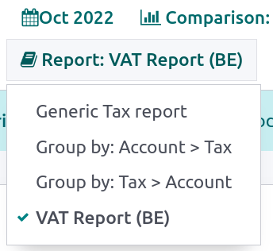
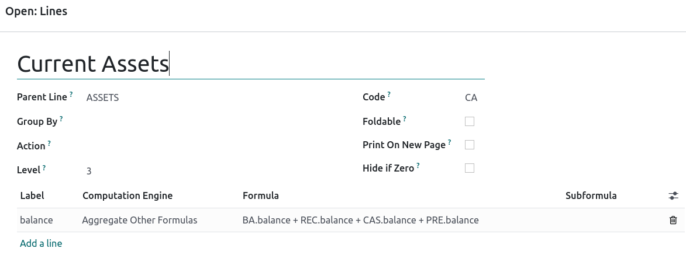

Reportes personalizados¶
Odoo dispone de un marco de reportes avanzado y fácil de usar. Esta herramienta le permite crear nuevos reportes como reportes fiscales, balances generales y estados de resultados con grupos y diseños específicos.
Importante
Active el modo de desarrollador para acceder a la interfaz de creación de reportes contables.
Para crear un nuevo reporte vaya a . Aquí, puede crear un reporte raíz o una variante.
Reporte raíz¶
Los reportes raíz se pueden considerar como reportes contables generales; sirven como modelos sobre los que se construyen las versiones de contabilidad locales. Si se crea un reporte y no se le asigna un reporte raíz, se considera que dicho reporte es un reporte raíz.
Example
Un reporte fiscal para Bélgica y Estados Unidos usará la misma versión general como base y se adaptará según sus normativas nacionales.
Si desea crear un reporte raíz nuevo, deberá crearle un elemento de menú primero. Para hacer esto debe abrir el reporte y, en el mismo reporte, hacer clic en . Vuelva a cargar la página y verá el reporte en .
Nota
No es normal encontrarse casos que requieran crear un nuevo reporte raíz, un ejemplo de casos que lo necesitan son los reportes específicos que exigen algunas autoridades fiscales.

Variantes¶
Las variantes son versiones específicas de los reportes raíz, por lo que siempre van a referirse a un reporte raíz. Para crear una variante, selecciona un reporte raíz general en reporte raíz al crear un nuevo reporte.
Cuando se abre un reporte raíz desde uno de los menús principales de la aplicación Contabilidad, aparecerán todas sus variantes en el selector de variantes situado en la esquina superior derecha de la vista.
Example
La siguiente imagen, reporte de IVA (BE) es una variante del reporte raíz reporte general de impuestos.
Líneas¶
Después de haber creado un reporte (raíz o variante), necesita agregar las líneas necesarias; las puede crear haciendo clic en agregar línea o modifique una línea existente al hacer clic sobre ella. Todas las líneas necesitan un nombre, y pueden llegar a tener una opción adicional de Código (de su elección) por si desea usar su valor en formulas.
Expresiones¶
Cada línea puede contener una o varias expresiones. Las expresiones pueden actuar como subvariables que se necesitan en una línea de reporte. Si desea crear una expresión, haga clic en Agregar línea dentro de una línea de reporte.
Si desea crear una expresión debe atribuirle una etiqueta que se utilizará como referencia a dicha expresión. Por lo tanto, cada expresión debe ser única entre todas las líneas. Se deben indicar tanto motor de cálculo y la Formula. El motor define la manera en que se interpretan las fórmulas y subfórmulas. Si es necesario, se pueden incluir distintas expresiones que utilicen diferentes motores de cálculo en la misma línea.
Nota
En algunos casos también va a ser necesario definir subfórmulas.
Motor del dominio de Odoo¶
Este motor identifica una fórmula como un dominio de Odoo cuyo destino son los objetos account.move.line.
La subformula le permite definir el uso de las líneas de movimiento que coinciden con el dominio para calcular el valor de la expresión:
sumEl resultado es la suma de todos los balances de las líneas de movimiento coincidentes.
sum_if_posEl resultado es la suma de todos los balances de las líneas de movimiento coincidentes si el importe es positivo; de lo contrario, es
0.sum_if_negEl resultado es la suma de todos los balances de las líneas de movimiento coincidentes si el importe es negativo; de lo contrario, es
0.count_rowsEl resultado es el número de sublíneas de esta expresión. Si la línea principal tiene un valor «agrupar por», corresponderá al número de claves de agrupación distintas en las líneas de movimiento coincidentes. De lo contrario, corresponderá al número de líneas de movimiento coincidentes.
Si coloca el signo - al principio de la subfórmula, el resultado tendrá un signo invertido.

Agregar otras fórmulas¶
Utilice este motor cuando necesite realizar operaciones aritméticas con las cantidades obtenidas para otras expresiones. Las fórmulas se componen de referencias a expresiones separadas por uno de los cuatro operadores aritméticos básicos (suma +, resta -, división / y multiplicación *). Si desea hacer referencia a una expresión, escriba el código de la línea principal seguido de un punto . y la etiqueta de la expresión (por ejemplo, código.etiqueta).
Las subfórmulas pueden ser las siguientes:
if_above(CUR(amount))Se devolverá el valor de la expresión aritmética solo si es mayor que el límite proporcionado. De lo contrario, el resultado será
0.if_below(CUR(amount))Se devolverá el valor de la expresión aritmética solo si es menor que el límite proporcionado. De lo contrario, el resultado será
0.if_between(CUR1(amount1), CUR2(amount2))Se devolverá el valor de la expresión aritmética solo si se encuentra entre los límites proporcionados. De lo contrario, se devolverá al límite más cercano.
if_other_expr_above(LINE_CODE.EXPRESSION_LABEL, CUR(amount))Se devolverá el valor de la expresión aritmética solo si el valor indicado por el código de línea y la etiqueta de expresión es mayor que el límite establecido. De lo contrario, el resultado será
0.if_other_expr_below(LINE_CODE.EXPRESSION_LABEL, CUR(amount))Se devolverá el valor de la expresión aritmética solo si el valor indicado por el código de línea y la etiqueta de expresión es inferior al límite establecido. De lo contrario, el resultado será
0.
CUR es el código de la divisa en mayúsculas, e importe es el importe del límite expresado en esa divisa.
También puede utilizar la subfórmula cross_report para que coincida con una expresión encontrada en otro reporte.
Prefijo de los códigos de cuenta¶
Este motor se utiliza para hacer coincidir los importes realizados en las cuentas mediante los prefijos de los códigos de estas cuentas como variables de una expresión aritmética.
Example
21Example
21 + 10 - 521 y 10, y resta el balance de las realizadas en cuentas con el prefijo 5.También es posible ignorar una selección de subprefijos.
Example
21 + 10\(101, 102) - 5\(57)101, 102 y 57.También puede aplicar un «subfiltrado» en los créditos y débitos utilizando los sufijos C y D. En este caso, solo se tendrá en cuenta una cuenta si su prefijo coincide, y si el balance total de las líneas de movimiento realizadas en esta cuenta es de crédito/débito.
Example
La cuenta 210001 tiene un balance de -42 y la cuenta 210002 tiene un balance de 25. La fórmula 21D solo coincide con la cuenta 210002, por lo que devuelve 25. La cuenta 210001 no coincide, ya que su saldo es de crédito.
Se pueden mezclar las exclusiones de los prefijos con los sufijos C y D.
Example
21D + 10\(101, 102)C - 5\(57)21 si es débito (D) y 10 si es crédito (C) pero ignora los prefijos 101 y 102, y resta el balance de las realizadas en cuentas con el prefijo 5, sin tomar en cuenta el prefijo 57.Si desea que la letra C o D coincida con un prefijo y no se utilice como sufijo, utilice una exclusión vacía ().
Example
21D\()21D, sin importar el signo de su balance.Además de utilizar prefijos de código para incluir cuentas, también puede hacer que coincidan con las etiquetas de cuentas. Esto es muy útil, por ejemplo, si su país no tiene un plan de cuentas estandarizado, donde es posible que se use el mismo prefijo para diferentes propósitos de una empresa a otra.
Example
etiqueta(25)Si la etiqueta a la que hace referencia está definida en un archivo de datos, puede usar XMLID en lugar del ID.
Example
etiqueta(mi_módulo.mi_etiqueta)También puede usar expresiones aritméticas con etiquetas y tiene la posibilidad de combinarlas con selecciones de prefijo.
Example
etiqueta(mi_módulo.mi_etiqueta) + etiqueta(42) + 1010.Los sufijos C y D se pueden utilizar de la misma forma con las etiquetas.
Example
etiqueta(mi_módulo.mi_etiqueta)CLa exclusión de prefijos también funciona con las etiquetas.
Example
etiqueta(mi_módulo.mi_etiqueta)\(10)10.Valor externo¶
La herramienta “valor externo” se utiliza para referirse a los valores manuales y traspasados. Estos valores no se almacenan con account.move.line, sino con account.report.external.value. Cada uno de estos objetos dirige directamente a la expresión sobre la que actúa, por lo que no hace falta hacer mucho para seleccionarlos.
Las fórmulas pueden ser las siguientes:
sumSi el resultado debe ser la suma de todos los valores externos del periodo.
most_recentSi el resultado debe ser el valor del último valor externo del periodo.
Además, puede usar las subfórmulas de dos formas:
rounding=XSe sustituye
Xpor un número para redondear la cantidad a X decimales.editableIndica que esta expresión se puede editar de forma manual, lo que provoca la aparición de un icono en el reporte que permite que el usuario realice esta acción.
Nota
Los valores manuales se crean en la date_to seleccionada en el reporte.
Ambas fórmulas se pueden usar al mismo tiempo, solo se deben separar por ;.
Example
editable;rounding=2Función python personalizada¶
Esta herramienta permite que los desarrolladores introduzcan cálculos personalizados de expresiones caso por caso. La fórmula es el nombre de una función de python a llamar, y la subfórmula es una clave a buscar en el diccionario devuelto por esta función. Utilícela solo si está creando su propio módulo personalizado.
Columnas¶
Los reportes pueden tener un número indefinido de columnas. Cada columna obtiene sus valores de las expresiones indicadas en las líneas. El campo expression_label de la columna proporciona la etiqueta de las expresiones cuyo valor se muestra. Si una línea no tiene ninguna expresión en ese campo, no se mostrará nada para ella en esta columna. Si se necesitan varias columnas, debe utilizar diferentes etiquetas de expresión

Si utiliza la función comparación de periodos en la pestaña Opciones de un reporte contable, todas las columnas se repiten en y para cada periodo.